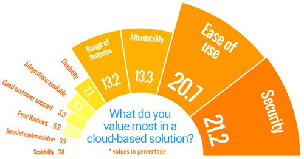
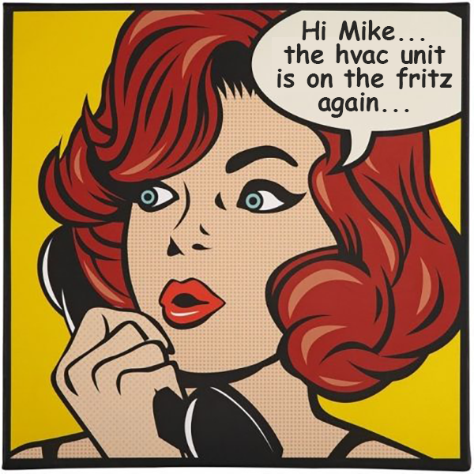

Web Based Work Order Software
 Before you invest your valuable time and energy implementing any old Work Order Maintenance Management Software, there are some things to consider. You and your staff should decide how they want to use a Work Order Management Software to track and control assets using multiple independent dimensions in real-time for equipment or space work orders. Historically speaking, I.T. and Financial staff may be scrambling for information from older systems. And then there are the calls by pressured boards for large increases in performance figures, equally large decreases in running costs. That leaves operations staff grappling with very few records making inaccurate decisions based on incomplete data. This is not the case with Maxpanda. Through an easy-to-use browser-based web page, any desktop, pc, mac, smartphone or tablet your team will have the ability to easily submit work order requests for multiple types of services online through your own Work Order Management Software portal. This will improve the quality of service, faster response times and better communication. At any time, end users can request repair work. If requests are converted to work orders through an easy to use validation screen, users are notified by e-mail of the status. During the entire process, your staff automatically receives e-mail updates and notices to requesters as work progresses. In addition, your customers have the ability to review the request/work order status online and in real time.
| Work Order Maintenance Management Software | |
| Work Order Management | |
| Automated Alerts (emails / push notifications) | |
| Inspections and Reports | |
| Identifying Negative Trends | |
| Preventative Maintenance Scheduling | |
| Customizable Tasks / Checklists | |
| Past-Due Task Notification | |
| Asset & Inventory Management | |
| Equipment & Parts Warranty Management | |
| Job-Site / Location Management | |
| Guest Requests (Guest Service Portal) | |
| Smartphone Friendly / Remote Access | |
| Super Fast Learning & Adoption |
| Work Order Maintenance Management Software | |
| Security and Infrastructures | |
| Property Improvement Initiatives | |
| Labor and Materials Cost Management | |
| Contractor and Vendor Invoicing | |
| Collaborate with Staff / Contractors in Real-Time | |
| Upload Manuals and Documents | |
| Security & Safety Compliance / Procedures | |
| Live Dashboard with Built-In Tech Support | |
| 24-7 Technical Support | |
| Ongoing Training | |
| Unlimited Number of Users (no extra fees) | |
| 100% Web-Based (no software / hardware required) | |
| Highly Secure / SSL Encrypted / Backed-up daily |
Work Order Maintenance Management Software: Receive and process maintenance work as easily as surfing the web. Our work order software is web-based, and on-demand through smartphones, tablets and desktops. Setup is quick and easy with unlimited access to support help and training. Start optimizing instead of managing your maintenance work without relying on spreadsheets, paper, and redundant emails. Improve response times to increase customer satisfaction. Generate reports allowing for better decision making. Spend less time processing and filing paperwork. Track parts, invoices, staff and vendor labor costs.
Preventative Maintenance Software: Automate the work order process with Maxpanda CMMS preventative maintenance (PM) software. Schedule recurring dates for work orders to be auto generated. E-mails and push notifications are created to assigned parties knowing exactly when a PM work order has been created or its status changed. Our auto scheduler mimics your Outlook Calendar making it familiar. Automatically pre-approve and pre-assign PM work orders to staff, vendor, contractor or to a generic email. PM procedures, tasks, images, office docs attached by smartphone, tablet and desktop.
Preventative Maintenance Software: Automate the work order process with Maxpanda CMMS preventative maintenance (PM) software. Schedule recurring dates for work orders to be auto generated. E-mails and push notifications are created to assigned parties knowing exactly when a PM work order has been created or its status changed. Our auto scheduler mimics your Outlook Calendar making it familiar. Automatically pre-approve and pre-assign PM work orders to staff, vendor, contractor or to a generic email. PM procedures, tasks, images, office docs attached by smartphone, tablet and desktop.
Inventory Management Software: Our Inventory Management for your computerized maintenance management system (CMMS) will maintain lean inventory levels, help identify waste, and control costs. Benefits of using inventory management software are the ability to track part costs across the life of any piece of equipment. Inventory is automatically subtracted from inventory totals when work orders are completed. Access important part information, such as vendor details, specifications, and part numbers. Auto run reports to stay on top of your costs for parts.
Asset Management Software: Our Asset Manager module improves asset accounting, tracking and maintenance. It tracks assignable assets, making it perfect for schools, government organizations and healthcare facilities where important assets change locations. Know when it's time to re-purpose or retire an asset. Easily track asset locations and the person they are assigned to. Store important asset information such as install dates, retirement dates, asset tags, attachments, location, procedure documentation and more.
Asset Management Software: Our Asset Manager module improves asset accounting, tracking and maintenance. It tracks assignable assets, making it perfect for schools, government organizations and healthcare facilities where important assets change locations. Know when it's time to re-purpose or retire an asset. Easily track asset locations and the person they are assigned to. Store important asset information such as install dates, retirement dates, asset tags, attachments, location, procedure documentation and more.
 Pressures from the real world are driving computerized maintenance management, Work Order Maintenance Management Software and enterprise asset management (CMMS/EAM) software vendors to rethink and revise not only product offerings, but how we as a service industry can help clients achieve lower maintenance costs. The cmms' of today has to be quite consolidated in functionality and feature rich to be viable in the global market place. Small to large scale companies are seeking a single software solution that can provide them with all the functionalities they require rather than purchasing multiple types (for example, water treatment monitoring, fleet maintenance and energy tracking services). Growing importance is how well a cmms vendor can support the variety of needs for these companies scattered around the globe (for example, supporting multiple languages and currencies) and consolidation across multiple business units, plants or warehouses. Another key trend is an ever-improving user interface such as better navigation aids that allow users to more quickly enter, analyze and report on their data. The installation of a cmms is another onerous task that can detour clients from adopting a digital work environment. A typical building audit the size of a 100 bed hospital for example, consists of 3 full days of gathering pertinent information. Average equipment count is up to 350/building. This includes assets such as water pumps and baseboards to eye wash stations, laundry facilities and kitchen equipment. All of these items of which must be entered into the cmms. The data entry portion for each Maxpanda client of this magnitude is an additional 14 day task for 1 person. Maxpanda has streamlined this process using a prepopulated excel sheet filled out by the client and uploaded overnight by our technical support team. The value of Maxpanda CMMS to the organization can be evaluated by a variety of key metrics including: employee attraction and retention, improved productivity, risk mitigation, sustainable initiatives, strategic business planning support, etc. All of these can be supported and enhanced by processes facilitated by the software. These tools provide value to the organization in three ways: interoperability, reorganization and culture. Interoperability: CAFM systems generate far greater value by providing information to other departments, then by facility management efficacy. Improving efficiency for production departments adds more value than saving costs in managing a facility. Information interoperability generated by integrating strategic space planning with strategic organization planning can shorten the time to bring products and services to market and reduce the disruption time for space churn. CAFM systems are the only organizational information sources that relate assets, people and space therefore this information can be invaluable to departments for planning and executing process to achieve their objectives. Opportunity for reorganization: The greatest value of technology advances to an organization is the ability to flatten the organizational structure and to eliminate silos. The computer greatly enhances communication, accountability and delegation. This allows the elimination of silos that exist based on the past need for the organization to be the communication system between the field staff and senior management. There is a strong argument that Real Estate, Facility Management and most parts of Information Technology should be merged into one organizational department. Maxpanda has realized this trend. Medium-Large scaled companies typically have IT and FM departments. Conveying Culture: FM software tools can be used to convey the culture, promote employee retention, and facilitate productivity. FM departments can use their website for conveying information, enforcing processes and marketing it's value.